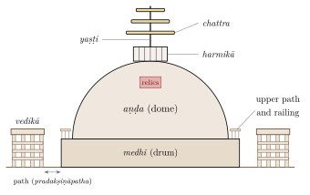
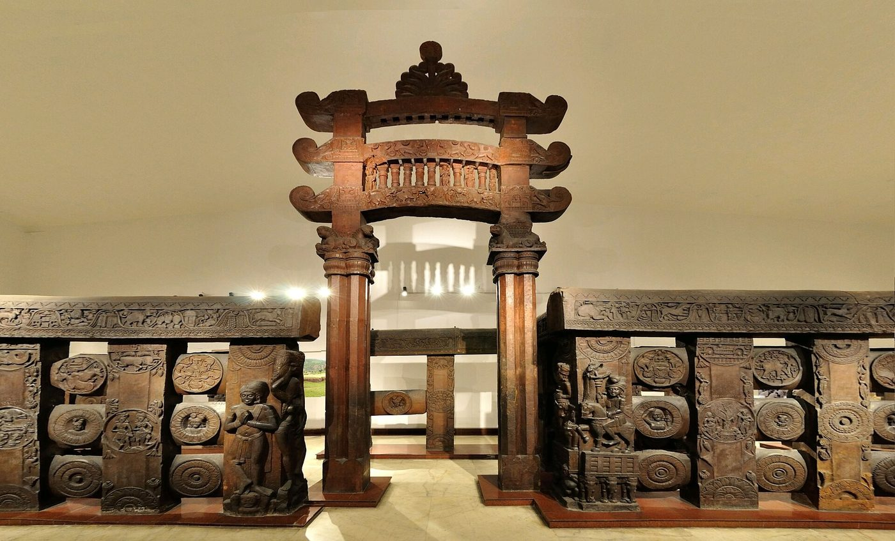
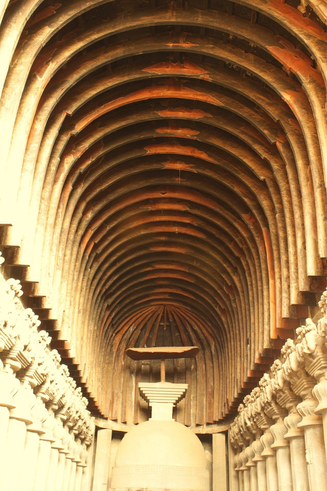
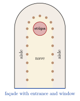
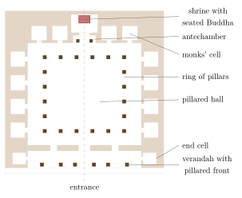
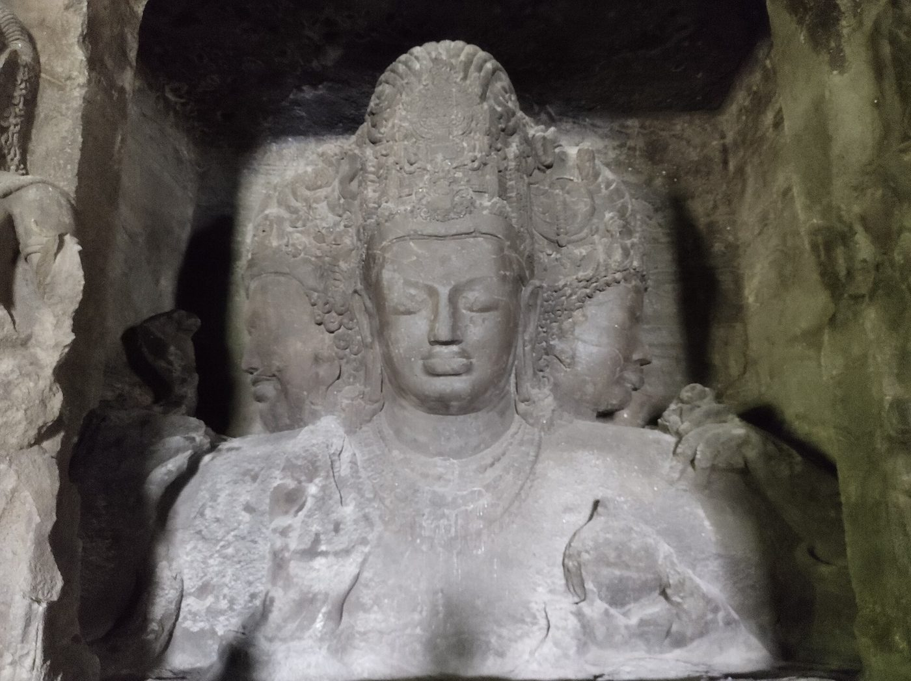
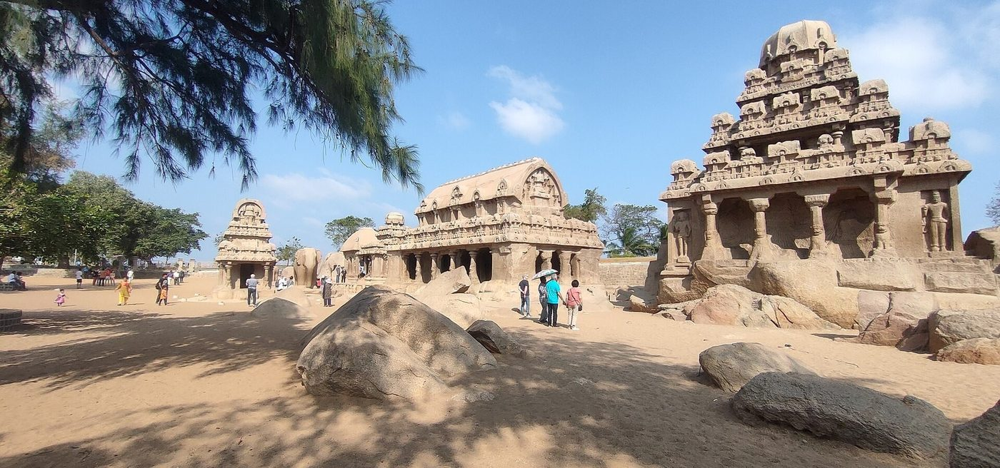
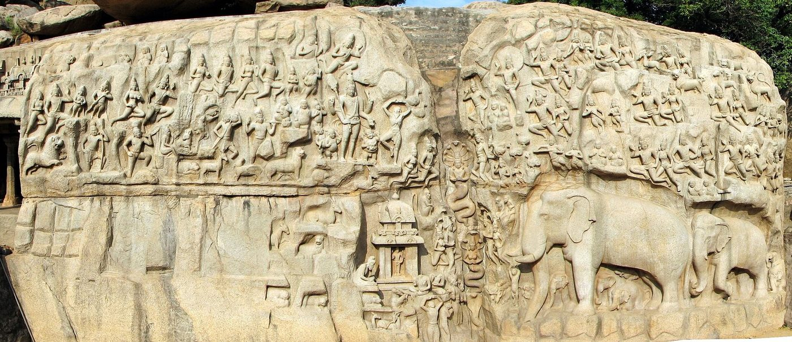
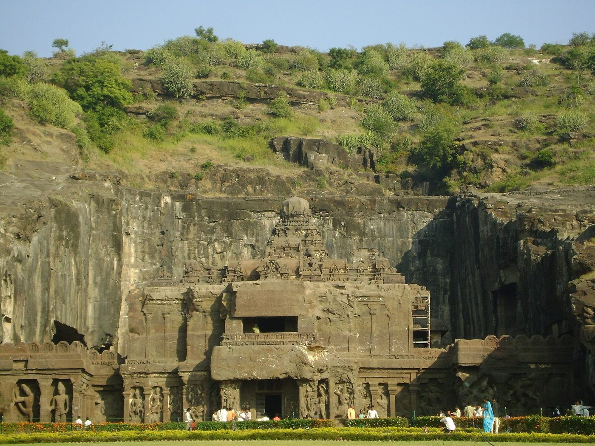

Chapter 3: Stūpas, Monasteries and Rock-Cut Architecture¶
3.1 Introduction¶
The oldest surviving monuments of historical India, after the Harappan cities, are Buddhist, Jain and Ājīvika: stūpas, monasteries and halls of worship, many of them cut into living rock. India has one of the richest traditions of rock-cut architecture in the world, with well over a thousand excavated caves, most of them in the western Deccan. They range from simple cells for monks to vast halls and, at Ellora and Māmallapuram, whole temples carved as free-standing monoliths. This chapter begins with the stūpa and the monastery, the core forms of Buddhist architecture, and then follows the rock-cut tradition from the Mauryas to the Rāṣṭrakūṭas (Huntington 1985; Dehejia 1972; Harle 1994). It comes before the chapters on the temple because these are the oldest surviving religious monuments of historical India, and because forms first fixed in them, above all the horseshoe-shaped arch of the caitya window, run through the later temple architecture of both North and South (Chapter 4). The history and doctrines of the Buddhist and Jain traditions are treated in Volume 4, Buddha–Jina Prabhā.
Rock-cut architecture is subtractive: nothing can be added once the rock is cut away, so the whole design must be planned in advance. The early caves reproduce in stone the forms of contemporary timber buildings, with ribbed vaults, rafters, railings and horseshoe-arched windows, and so preserve a record of a timber architecture that has otherwise vanished (Table 3.1).
| Type | Form and function |
|---|---|
| stūpa | A solid hemispherical mound over relics of the Buddha or of revered monks, surrounded by a path for circumambulation and often by a railing with gateways |
| caitya hall | A hall of worship, usually apsidal, with a nave, aisles and a stūpa (or later an image) in the apse |
| vihāra | A monastery: cells for monks or nuns grouped round a court or hall |
| maṇḍapa cave | In Hindu and Jain caves, a pillared hall with a shrine cut into its rear wall |
| monolith | A free-standing temple carved from a single mass of rock |
3.2 The Stūpa¶
3.2.1 Form and Meaning¶
The stūpa began as a burial mound. According to the Mahāparinibbāna Sutta, the Buddha’s relics were divided after his cremation and enshrined in stūpas, and Buddhist tradition credits Aśoka with redistributing them among many more. A developed stūpa consists of a circular base or drum (medhi), a hemispherical dome (aṇḍa, “egg”), a square railing on top (harmikā), and a mast (yaṣṭi) carrying one or more umbrellas (chattra), symbols of honour (Figure 3.1). A path for circumambulation (pradakṣiṇāpatha) runs round the base and is enclosed by a railing (vedikā), entered through gateways (toraṇa) at the four cardinal points. The relics were placed in caskets, often of stone or crystal, deep within the mound; the inscriptions on these caskets are important historical documents. Later stūpas, in Gandhāra and elsewhere, were raised on high square platforms and became taller and more elaborate.

The stūpa has been interpreted as a symbol of the Buddha’s final nirvāṇa, of the world mountain and the axis of the world, and of the Buddha himself; Buddhist texts support some of these readings and not others, and they should be presented as interpretations.
3.2.2 Sāñcī, Bhārhut and Amarāvatī¶
The Great Stūpa at Sāñcī (Figure 1.1) began as a brick stūpa of the Mauryan period, perhaps built under Aśoka, beside one of his pillars. In the 2nd century BCE it was doubled in size and cased in stone, with a stone railing, and around the turn of the Common Era four great gateways were added. Their pillars and architraves are carved with scenes from the life of the Buddha and from the jātaka stories of his previous lives, with yakṣīs (female tree spirits) as brackets; an inscription records that one carving was the work of the ivory-carvers of nearby Vidiśā. The railing and gateways bear hundreds of short inscriptions recording gifts by monks, nuns, householders and guilds from a wide region (Huntington 1985; Dehejia 1997).
At Bhārhut (2nd century BCE), the railing, now largely in the Indian Museum, Kolkata (Figure 3.2), carries labelled reliefs of jātakas and of yakṣas and yakṣīs. At Amarāvatī in Andhra (2nd century BCE–3rd century CE) the stūpa was cased in carved limestone slabs; many are now in the Government Museum, Chennai, and the British Museum. The stūpa of Nāgārjunakoṇḍa, also in Andhra, was built on a plan of radiating walls filled with earth, a technique used for other large stūpas.


3.2.3 The Question of Aniconism¶
In the early reliefs of Bhārhut and Sāñcī the Buddha is not shown in human form; his presence is indicated by a tree, a throne, footprints, a wheel or a stūpa. This has traditionally been explained as a deliberate avoidance of the human image of the Buddha (“aniconism”), lasting until images appear around the 1st century CE in Mathurā and Gandhāra. Susan Huntington challenged this explanation, arguing that many of these reliefs show the worship of sacred places and objects rather than events of the Buddha’s life; Vidya Dehejia and others have replied that the symbols could be read in several ways at once. Neither reading accounts for every relief (Huntington 1990; Dehejia 1991).
3.3 Monasteries¶
The monastic codes (vinaya) of the Buddhist schools regulate the dwellings of monks and nuns in some detail: the size of a cell, the furnishing of beds and seats, the provision of wells, latrines, bathhouses and walking places, and the rules for accepting gifts of buildings from lay donors. Monasteries were meant to stand at a suitable distance from towns, neither too near nor too far, so that monks could go on their alms rounds; many of the rock-cut monasteries of the western Deccan lie a short walk from the trade routes and towns they served.
Buddhist monks and nuns lived first in temporary shelters during the rainy season and then in permanent monasteries (vihāra, saṅghārāma). The standard plan, found in both rock-cut and structural monasteries, is a square court surrounded by cells, with a shrine opposite the entrance in later examples. Large monasteries had stūpas, halls, kitchens, wells and stores. The great monastic universities of eastern India, Nālandā (founded in the 5th century CE) and, later, Vikramaśilā and Somapura (Paharpur, in modern Bangladesh), consisted of rows of such monasteries and temples built of brick. Nālandā flourished until it was sacked around 1200, during the campaigns of Bakhtiyār Khaljī (c. 1193–1205); its activity was much reduced thereafter, although the Tibetan pilgrim Dharmasvāmin found a few monks teaching there in 1234. The decline of Buddhism in most of India in the following centuries, for which the destruction of the monasteries was one cause among several, left these sites in ruins until their excavation in the 19th and 20th centuries.
3.4 Nālandā¶
The excavated remains of Nālandā in Bihar, uncovered by the Archaeological Survey from 1915 onward, show the plan of a great monastic institution. A line of large brick monasteries stands on the east side of the site, each a square court surrounded by cells on two or more storeys, with a shrine opposite the entrance, wells and kitchens; facing them on the west is a line of temples and stūpa-shrines, the largest of which (“Site 3”) was enlarged in at least seven phases into a massive stepped structure with corner towers. Clay sealings bearing the name of the “great monastery” (mahāvihāra) and inscriptions of the Gupta, Pāla and other rulers who endowed it have been found there. The Chinese monks Xuanzang (in the 630s) and Yijing (in the 670s) studied at Nālandā and described its learning, its discipline and its endowments of villages. The site was inscribed by UNESCO in 2016. The often-repeated claim that its library held “nine million manuscripts” has no historical basis.
3.5 Bodh Gayā, Sārnāth and the Buddhist Holy Places¶
The places associated with the life of the Buddha, Lumbinī (his birth), Bodh Gayā (his enlightenment), Sārnāth (his first sermon) and Kuśīnagara (his death), became centres of pilgrimage, and Aśoka visited several of them. At Bodh Gayā in Bihar, the Mahābodhi temple stands beside the descendant of the tree under which the Buddha is said to have attained enlightenment, with a stone slab, the “diamond seat” (vajrāsana), marking the place. The present brick temple, with its tall pyramidal tower and four corner towers, probably goes back to the 5th–6th century in its basic form, but it was much rebuilt, notably by Burmese missions in the 11th–14th centuries and by the British in the 1880s. Parts of a stone railing of the 1st century BCE survive. The temple was inscribed by UNESCO in 2002. At Sārnāth, near Vārāṇasī, the great cylindrical Dhamekh stūpa (5th–6th century, on an earlier core), with its band of finely carved geometric and floral ornament, stands among the remains of monasteries and of the pillar of Aśoka whose lion capital is now in the site museum.
In the north-west, the monasteries of Gandhāra, such as Takht-i-Bāhī near Peshawar (1st–7th century), built on a hilltop with a court of votive stūpas, a main stūpa court and a monastery of cells, and the Dharmarājikā stūpa and monasteries of Taxila, show the architectural setting of Gandhāran sculpture. In Odisha, the monastic sites of Ratnagiri, Lalitgiri and Udayagiri (Lalitgiri from the early centuries CE; all three flourishing c. 7th–12th century) were important centres of Mahāyāna and Vajrayāna Buddhism, with brick monasteries, stūpas and fine sculpture. In the western Himalaya, the monasteries of Tabo in Spiti (founded 996) and Alchi in Ladakh (11th–12th century), with their mud-brick walls, timber roofs and painted interiors, preserve the architecture and art of the later spread of Buddhism to Tibet.
3.6 The Mauryan Caves¶
The earliest Indian rock-cut chambers are the caves in the Barābar and Nāgārjunī hills near Gayā in Bihar. Their inscriptions record that they were given to the Ājīvikas, an ascetic order contemporary with early Buddhism and Jainism, by Aśoka (r. c. 268–232 BCE) and by his grandson Daśaratha. They are cut into hard granite and their interiors have the high polish characteristic of Mauryan stonework. Two of the Barābar caves carry Aśoka’s dedicatory inscriptions: the Sudāmā cave, a rectangular hall leading to a domed circular chamber, and the Karṇa Caupar, a single polished rectangular chamber. The Gopikā cave in the Nāgārjunī hills, a long vaulted hall, was dedicated by Daśaratha. The Lomas Ṛṣi cave is uninscribed but of the same period, and its entrance is the most important of all, because it reproduces in stone the curved roof, rafters and lattice of a timber building, with a frieze of elephants in the arch: the earliest instance of the horseshoe arch (caitya arch, gavākṣa) that would remain a basic motif of Indian architecture for more than a thousand years.
3.7 The Buddhist Caves of the Western Deccan¶
From the 2nd century BCE, Buddhist communities excavated monasteries and halls along the trade routes that crossed the Western Ghats between the ports of the Konkan coast and the cities of the Deccan plateau. Their inscriptions record gifts by merchants, artisans, monks, nuns and members of the Sātavāhana and Western Kṣatrapa courts (Dehejia 1972).
3.7.1 The Caitya Hall¶
The rock-cut caitya hall is an apsidal hall divided by rows of pillars into a nave and aisles, with a stūpa at the apse and a ribbed barrel vault over the nave. The façade is dominated by a great horseshoe-shaped window that lights the interior (Figure 3.4).
3.7.2 Bhājā, Kārlā and Other Sites¶
The caitya hall at Bhājā (c. 2nd century BCE) is one of the earliest; its façade was originally completed with timber, as the sockets for wooden fittings show, and its pillars lean inwards like the posts of a wooden building. The great caitya hall at Kārlā (Kārle), of about the 1st century CE, is the largest and most accomplished (Figure 3.3, left). It is about 38 metres long and some 14 metres high, and its vault still carries original teak ribs. Its pillars have pot-shaped bases and bell-shaped capitals crowned by sculptured pairs of riders on elephants and horses, and the entrance is flanked by large reliefs of donor couples. An inscription credits a merchant (seṭhi) named Bhūtapāla of Vaijayantī with the “rock mansion” (selaghara), which it describes as the finest in Jambudvīpa. Other important early sites include Kondāṇe, Pitalkhorā, Beḍsā, Nāsik (the Pāṇḍavleṇī caves, with important Sātavāhana inscriptions), Junnar and Kānheri.



3.7.3 Kānheri and Nāsik¶
At Kānheri, in the hills of what is now Mumbai, more than a hundred caves were cut over a long period, from about the 1st century BCE to the 10th century CE, with a caitya hall modelled on Kārlā, monasteries, water cisterns, stairways cut in the rock, and a burial ground of monks’ memorial stūpas: an entire monastic settlement. The caves at Nāsik (Pāṇḍavleṇī) bear some of the most important historical inscriptions of the Sātavāhanas and Western Kṣatrapas, recording gifts of caves, villages and money deposited with guilds of weavers and others, whose interest was to provide robes and food for the monks. These inscriptions show that monasteries were embedded in the economic life of the region.
3.8 Ajaṇṭā¶
The caves of Ajaṇṭā, cut into a horseshoe-shaped bend of the Waghora river in Maharashtra, were made known to Europeans in 1819 by a party of British officers. There are about thirty caves, made in two distinct phases (Spink 2005) (Table 3.2):
| Phase | Period | Principal caves | Character |
|---|---|---|---|
| Early | c. 2nd–1st c. BCE | 9, 10 (caitya halls), 12, 13, 15A | No images of the Buddha in human form; some early paintings in caves 9 and 10 |
| Later | 5th c. CE (mainly c. 460–480, according to Spink) | 1–7, 11, 14–29, incl. 19 and 26 (caitya halls) | Vākāṭaka-period patrons; Buddha images in shrines; extensive painting |
Walter Spink has argued that most of the later caves were made in a short burst of activity under the Vākāṭaka king Hariṣeṇa (d. c. 477) and his feudatories, and abandoned unfinished soon after; his short chronology is widely, though not universally, accepted. The later monasteries (for example caves 1, 2, 16 and 17) consist of a pillared hall surrounded by cells, with a shrine containing a large image of the seated Buddha at the back (Figure 3.5). The shrine turned the monastery into a place of image worship as well as a residence, a change that Spink traces through the sequence of excavation at the site.

The two later caitya halls, 19 and 26, place a Buddha image on the front of the stūpa and have richly sculptured façades (Figure 3.3, right). The paintings of the later caves, including the famous Bodhisattva of cave 1 known as Padmapāṇi, are discussed in Chapter 14.
Inscriptions in the caves name some of their patrons. Cave 16 was dedicated by Varāhadeva, a minister of Hariṣeṇa, and other caves by local rulers and monks; an inscription in cave 26 records its donation by the monk Buddhabhadra. The variety of donors, royal, official and monastic, and the evidence of unfinished work, interrupted shrines and later intrusive images, have allowed Spink and others to reconstruct the history of the site in unusual detail. Ajaṇṭā, like Ellora, was inscribed by UNESCO in 1983.
3.9 Hindu and Jain Caves of the 5th to 7th Centuries¶
3.9.1 Udayagiri (Madhya Pradesh)¶
The caves at Udayagiri near Vidiśā, of the early 5th century, are among the earliest Hindu cave shrines. One bears an inscription of the reign of the Gupta emperor Candragupta II dated 401 CE. The most famous sculpture is the great relief of Viṣṇu as the Boar (Varāha) rescuing the Earth from the waters, surrounded by rows of sages and gods. Michael Willis has shown how the site was linked to the astronomy and ritual of the Gupta court (Willis 2009).
3.9.2 Udayagiri and Khaṇḍagiri (Odisha)¶
Near Bhubaneswar, the twin hills of Udayagiri and Khaṇḍagiri contain Jain monastic caves, some of them two-storeyed with carved friezes. The Hāthīgumphā inscription of the Mahāmeghavāhana king Khāravela of Kaliṅga, probably of the 1st century BCE, is cut above one of them.
3.9.3 Elephanta¶
The main cave on the island of Gharapuri (Elephanta) in Mumbai harbour, of about the mid-6th century, is a Śaiva temple: a great pillared hall with entrances on three sides, a free-standing liṅga shrine with four doorways, and large relief panels of Śiva’s forms and deeds, including Śiva as Lord of Dance, as the half-female Ardhanārīśvara, receiving the Gaṅgā in his hair, at his marriage to Pārvatī, and subduing Rāvaṇa. Its focus is the colossal relief of a three-headed Śiva (Figure 3.6), over five metres high, set in a recess in the south wall. It was long called the “Trimūrti” and interpreted as Brahmā, Viṣṇu and Śiva; scholars now identify it as Maheśamūrti or Sadāśiva, the five-faced supreme form of Śiva, of whom three faces are visible: a calm central face, a fierce face (Aghora-Bhairava) on one side and a gentle, feminine face (Vāmadeva, associated with Umā) on the other (Harle 1994).


3.9.4 Bādāmi¶
At Bādāmi, the early Cālukya capital in Karnataka, four caves were cut into the red sandstone cliffs above a lake. Cave 3, dedicated to Viṣṇu, bears an inscription of 578 CE recording its dedication by Maṅgaleśa; its reliefs show Viṣṇu seated on the serpent, as Narasiṃha, as Trivikrama and as Varāha. Cave 1 is Śaiva and contains a dancing Śiva with eighteen arms; Cave 2 is Vaiṣṇava; and Cave 4, of the 7th century, is Jain, with images of Pārśvanātha, Bāhubali and other Jinas. The early Cālukyas also excavated caves at Aihoḷe, such as the Rāvaṇa Phaḍi.
3.10 Cave Temples of the South¶
In the Tamil country, the earliest stone temples are cave shrines of the Pallavas and Pāṇḍyas of the 7th and 8th centuries. An inscription in the cave temple at Maṇḍagapaṭṭu, attributed to the Pallava king Mahendravarman I (early 7th century), states that he created a shrine for Brahmā, Īśvara and Viṣṇu without the use of brick, timber, metal or mortar, a statement that has often been taken to mark the beginning of stone architecture in the region, where earlier temples had been built of perishable materials. Mahendravarman’s caves, at Maṇḍagapaṭṭu, Mahendravāḍi, Tiruchirappalli and elsewhere, are simple pillared halls with massive square pillars and guardian figures; those of his successors at Māmallapuram are more elaborate. The Pāṇḍyas excavated many cave temples in the far south, at sites such as Tirupparankuṉṟam, Kuṉṉakkuḍi and Kaḻugumalai, where the unfinished monolithic temple of Veṭṭuvāṉ Kōyil (8th century) was carved from the top of a granite hill, like a smaller Kailāsa.
3.11 Māmallapuram¶
At Māmallapuram (Mahabalipuram) on the Tamil coast, the Pallava kings of the 7th and early 8th centuries, especially Narasiṃhavarman I Māmalla (r. c. 630–668), from whom the place takes its name, and Narasiṃhavarman II Rājasiṃha (r. c. 690–728), created a group of monuments that was inscribed by UNESCO in 1984. They include pillared cave shrines (maṇḍapa) with relief panels, such as the Varāha and Mahiṣāsuramardinī caves; monolithic temples; the structural Shore Temple of Rājasiṃha’s time (Chapter 5, Section 5.6.3); and a great open-air relief. The style of their sculpture is discussed in Chapter 13.
3.11.1 The Five Rathas¶
The “Five Rathas” are monolithic shrines carved in the 7th century from a granite outcrop. Their names, after the five Pāṇḍava brothers and Draupadī of the Mahābhārata, are modern and have nothing to do with their original dedications. They reproduce in stone the principal forms of early southern buildings (Table 3.3 and Figure 3.7):
| Name | Form |
|---|---|
| Draupadī ratha | Small square shrine with a curved roof like that of a thatched hut |
| Arjuna ratha | Square two-storeyed Drāviḍa shrine with an octagonal cupola |
| Bhīma ratha | Oblong shrine with a barrel-vaulted roof (śālā) |
| Dharmarāja ratha | Square three-storeyed Drāviḍa shrine, the tallest of the group |
| Nakula–Sahadeva ratha | Apsidal shrine; a monolithic elephant stands beside it |


3.11.2 The Great Relief¶
The relief carved across two great boulders (Figure 3.8), nearly thirty metres long, shows a crowd of gods, celestial beings, sages, hunters and animals converging on a natural cleft, down which water once flowed, with serpent deities in it. It is identified either as Arjuna’s penance to obtain a weapon from Śiva, or as the penance of Bhagīratha to bring the Gaṅgā down to earth; the debate between the two interpretations has never been settled, and some scholars think the ambiguity may be intended.


3.12 Ellora¶
The caves of Ellora, near Aurangabad in Maharashtra, comprise thirty-four principal excavations of three religions, made between about the 6th and the 10th century (Harle 1994) (Table 3.4):
| Group | Caves | Religion | Period (approx.) |
|---|---|---|---|
| Southern | 1–12 | Buddhist | 6th–8th c. |
| Central | 13–29 | Hindu | 6th–9th c. |
| Northern | 30–34 | Jain | 9th–10th c. |
The Buddhist caves include the caitya hall of cave 10 and the three-storeyed monasteries of caves 11 and 12. Cave 10, known locally as the Viśvakarmā cave after the divine craftsman, has a façade carved to imitate a structural building with a balcony and a window, and a large seated Buddha in front of the stūpa in its apse; caves 11 and 12 (Do Thal and Tin Thal) rise in three storeys of pillared halls, with rows of seated Buddhas, bodhisattvas and goddesses that reflect the growth of Vajrayāna Buddhism in the 7th and 8th centuries. Among the Hindu caves, cave 29 (Dhumar Leṇa) resembles the main cave at Elephanta, and caves 14, 15 and 21 have fine reliefs of Śiva and Viṣṇu.
3.12.1 The Kailāsa Temple (Cave 16)¶
The Kailāsa, dedicated to Śiva and attributed on inscriptional evidence to the Rāṣṭrakūṭa king Kṛṣṇa I (r. c. 756–773), is the largest monolithic temple in India (Figure 3.9). The builders cut three deep trenches into the hillside to isolate a block of basalt and then carved it from the top downwards into a complete Drāviḍa temple: a two-storeyed shrine with a superstructure some thirty metres high, a hall, a porch, a pavilion for Śiva’s bull Nandī, a gateway and two free-standing pillars, linked by bridges and surrounded by a court whose walls are cut into galleries. The amount of rock removed is commonly estimated at about 200,000 tonnes. The temple is closely related in plan to the Virūpākṣa at Paṭṭadakal (Chapter 5), and its form is that of the Drāviḍa temple described in Chapter 4. Its reliefs, which include the famous scene of Rāvaṇa shaking Mount Kailāsa, Śiva’s home, are discussed with the sculpture of the Rāṣṭrakūṭas in Chapter 13.

_in_Ellora_Caves.jpg){kind=link}
3.12.2 The Jain Caves¶
The Jain caves at the northern end of Ellora, of the 9th and 10th centuries, include the Indra Sabhā (cave 32), a two-storeyed excavation with a small monolithic shrine in its court, and the Jagannātha Sabhā (cave 33), with images of the tīrthaṅkaras, of the Jain goddesses Ambikā and Siddhāyikā, and of Bāhubali. Sittannavāsal in Tamil Nadu is an important Jain cave in the South, with remains of painting.
3.13 Jain Sacred Hills¶
Jain communities created a distinctive kind of sacred landscape: hills covered with temples, to which pilgrims climb on foot. At Śatruñjaya, above the town of Pālitāṇā in Gujarat, several hundred shrines, most of them rebuilt from the 16th century onward after earlier destruction, are grouped in walled enclosures (ṭuṅk) along the two ridges of the hill; no one may stay on the hill overnight, for it belongs to the gods. Girnār near Junāgaḍh, sacred to Neminātha, has temples of the 12th century and later high on its slopes; Sammet Śikhar (Pārasnāth) in Jharkhand is revered as the place where twenty of the twenty-four tīrthaṅkaras attained liberation. At Śravaṇabeḷagoḷa in Karnataka, the hill of Candragiri carries a group of early medieval basadis and inscriptions associated by tradition with the migration of Bhadrabāhu and Candragupta Maurya, and the facing hill of Vindhyagiri the colossal Bāhubali (Chapter 13). These sites illustrate the importance of pilgrimage, lay patronage and continuous renewal in Jain religious architecture.
3.14 How the Caves Were Made¶
Unfinished caves at Ajaṇṭā, Ellora and elsewhere show how the work was done. The masons first cut the outline of the façade; they then worked into the rock from the top, so that they always worked downwards and never needed scaffolding below the working face. The interior was roughed out by cutting channels and removing blocks, leaving masses of rock from which pillars, images and other features were later carved; the finished surfaces were dressed and, where painting was planned, covered with plaster. Iron chisels and picks were the main tools. The rock had to be chosen with care: the Deccan basalt, in horizontal flows of varying quality, was well suited to cutting, while the granite of Barābar and Māmallapuram and the sandstone of Bādāmi each imposed their own constraints. Water was a constant concern, and many caves have cisterns cut into the rock and channels to carry rain away from the façade.
3.15 Decline and Rediscovery¶
By the 13th century Buddhism had disappeared from most of India, except in the Himalaya and in parts of the east, and its monuments were abandoned. The reasons were many: the loss of royal and mercantile patronage, competition from Hindu devotional movements and the absorption of Buddhist ideas and sites into Hinduism, the concentration of Buddhism in a few great monasteries, and the destruction of those monasteries in the conquests of the late 12th and early 13th centuries. Many stūpas were quarried for bricks and stone, and many sites were forgotten. Their rediscovery began in the late 18th and 19th centuries, when British officers and Indian scholars identified sites with the help of the accounts of the Chinese pilgrims Faxian and Xuanzang, and the Archaeological Survey excavated and restored them (Chapter 1). The revival of Buddhist pilgrimage to Bodh Gayā and Sārnāth from the late 19th century, the conversion of B. R. Ambedkar and hundreds of thousands of his followers to Buddhism at Nagpur in 1956, and the building of new monasteries and temples by Buddhist communities from many countries have given the old sites new life.
3.16 The Stūpa beyond India¶
The stūpa travelled with Buddhism and took new forms in each country. In Sri Lanka, the great dāgabas (from Pali dhātugabbha, “relic chamber”) of Anurādhapura, such as the Ruvanvälisāya and the Jetavanārāma, built between the 2nd century BCE and the 4th century CE, are enormous brick hemispheres; the Jetavanārāma was among the largest brick structures of the ancient world. In Myanmar, the stūpa became the tall, bell-shaped gilded pagoda of Bagan and the Shwedagon at Yangon; in Java, the stepped terraces of Borobudur (late 8th–early 9th century) carry hundreds of reliefs and small perforated stūpas around a central one; in Nepal, the white domes of Svayambhūnāth and Boudhanāth bear painted eyes on their harmikās (on the monasteries of the Kathmandu valley see Chapter 5, Section 5.7.6); and in Tibet and China, the chörten and the pagoda developed from the same ancestry. These monuments are part of the history of Asian Buddhism rather than of India alone, but they show how far the Indian stūpa travelled (Huntington 1985).
3.17 From Timber to Rock to Temple¶
The monuments of this chapter record a double transfer. The earliest caves copied in rock the timber halls and monasteries that have otherwise vanished, so that the ribbed vault, the leaning post and the horseshoe window survive only because masons reproduced them in stone. Later, the rock-cut tradition became a laboratory for the temple: the cave shrines of the 5th to 7th centuries tried out the sanctum, the pillared hall and the sculptural programme, and the monoliths of Māmallapuram and Ellora carved whole Drāviḍa temples out of the hillside. Unlike the Brahmanical temple, however, these monuments were paid for by a very wide public: their inscriptions name monks and nuns, merchants, artisans and many women, alongside kings. The next chapter turns to the structural temple, whose forms grew in part out of this tradition.
Further Reading¶
-
Dehejia, Vidya. 1972. Early Buddhist Rock Temples: A Chronology. Thames and Hudson.
-
Spink, Walter M. 2005. Ajanta: History and Development. Brill.
-
Huntington, Susan L. 1985. The Art of Ancient India: Buddhist, Hindu, Jain. Weatherhill.
-
Willis, Michael. 2009. The Archaeology of Hindu Ritual: Temples and the Establishment of the Gods. Cambridge University Press.
-
Dehejia, Vidya. 1997. Indian Art. Phaidon.
-
Brown, Percy. 1942. Indian Architecture (Buddhist and Hindu Periods). D. B. Taraporevala Sons.